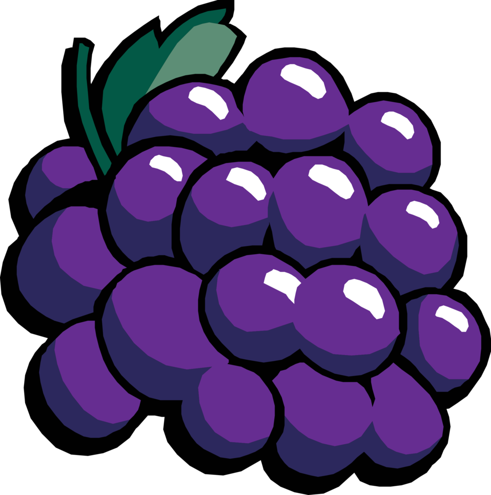

It's Time for the Populator
Declarative initialization of kubernetes persistent storage
Adam Litke - alitke@redhat.com
Principle Software Engineer - Red Hat
FOSDEM 2019 - 02 February 2019
Kubernetes
- The de-facto way to run containers at scale.
- Declarative model using the Controller pattern
- Extensible using Custom Resources and Controllers
Nodes

- A Kubernetes worker machine
- Have the services necessary to run Pods (container runtime, kubelet and kube-proxy)
- Managed by master components
Pods
- One or more containers
- Run together on a Node
- Shared storage and networking
Storage Resources
- Persistent Volume: a piece of provisioned storage of a certain type
- Persistent Volume Claim: a request for a piece of storage
Why do we need PVC Initialization?
- Clone your database
- Big data processing
- Restore from backup
- Mutable persistent data (ie. VM disk)
Current options
- `kubectl cp` into a running container
- Run a special Pod first to prepare PVC
- Use an initContainer in your application Pod
Initcontainer example
apiVersion: v1
kind: Pod
metadata:
name: fosdemo-pod
spec:
containers:
- name: fosdemo-nginix
image: nginx
initContainers:
- name: init-content
image: busybox
command: ['sh', '-c',
'wget -O /usr/share/nginx/html http://fosdem.org']
Is it good enough?
- You will want more features
- Error handling
- Authorization and Security
- Logging and monitoring
- You need to manage it
- Ordering
- ReplicaSets and auto-scaling
- Error handling
A Better Approach
- Declarative, the kubernetes way
- A Custom Resource describes a population strategy
- PVC references Custom Resource
- A Populator Controller manages the process
- Can be used to collaborate on many populators
Declarative Population
If you request a populated PVC, kubernetes will not make that PVC available
to Pods until it has been populated.
Taints and Tolerations
- Reuse existing Kubernetes pattern
- New PVCs with a DataSource defined receive a Taint
- Signifies the PVC has not been populated yet
- Regular Pods will not schedule while a PVC is tainted
- Populator pods will express a Toleration and may run
- Populator Controller removes the Taint on success
Next Steps
- Allow CRs in PVC DataSource field
- PVC Taints and Tolerations
- Populator SDK
Populator Examples
- Git Repo
- HTTP using k8s secrets for authentication
- Clone existing PVC
- Upload data from client
- Restore from backup
Thank you!
- Check out github.com/kubevirt/containerized-data-importer